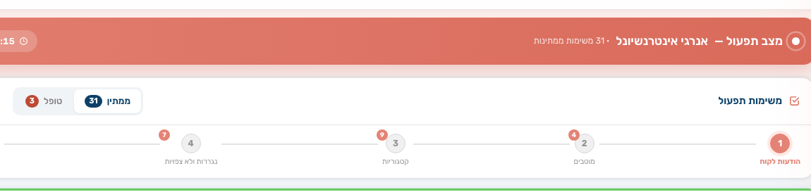
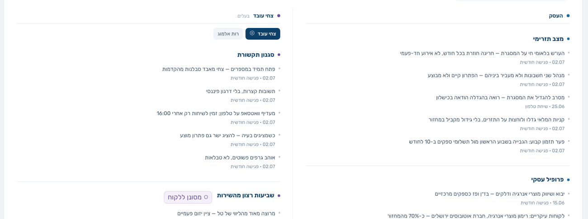
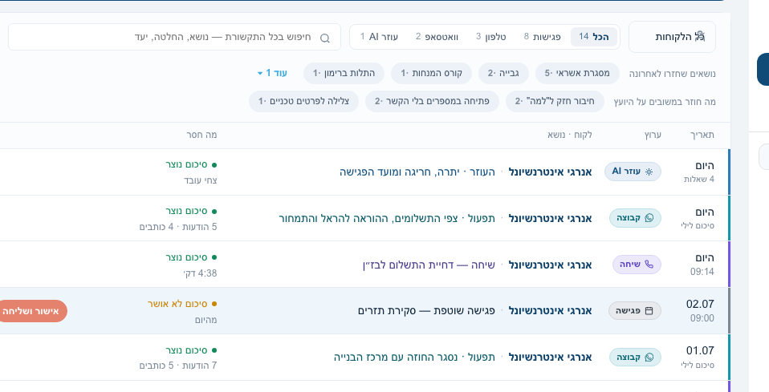
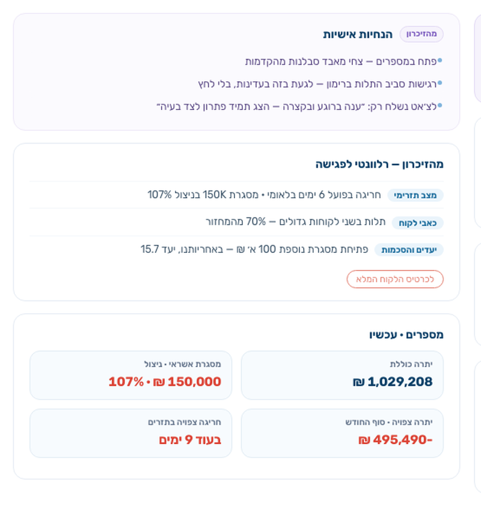
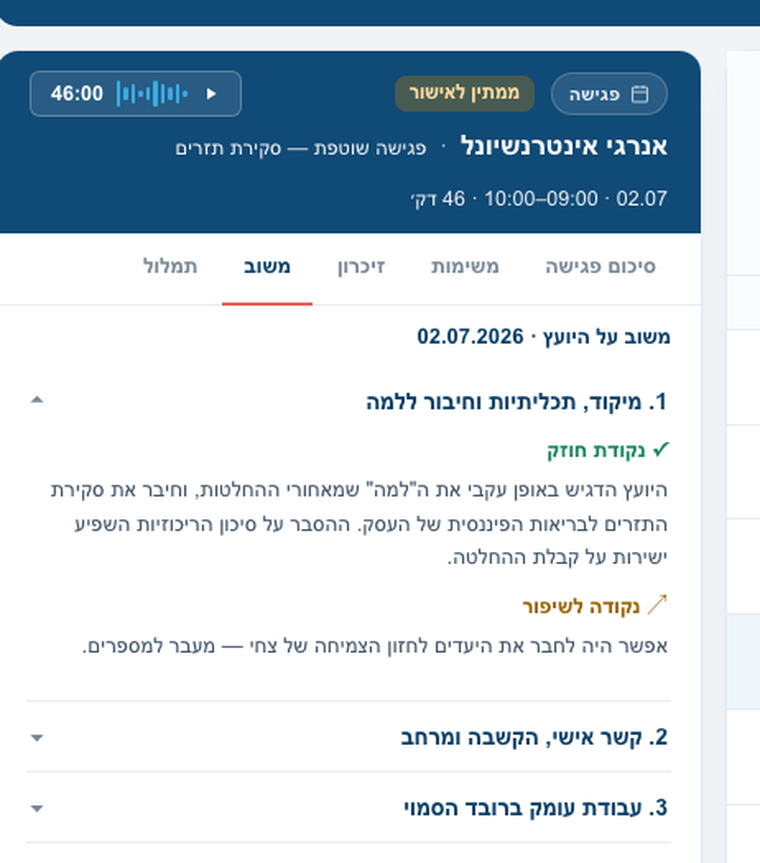
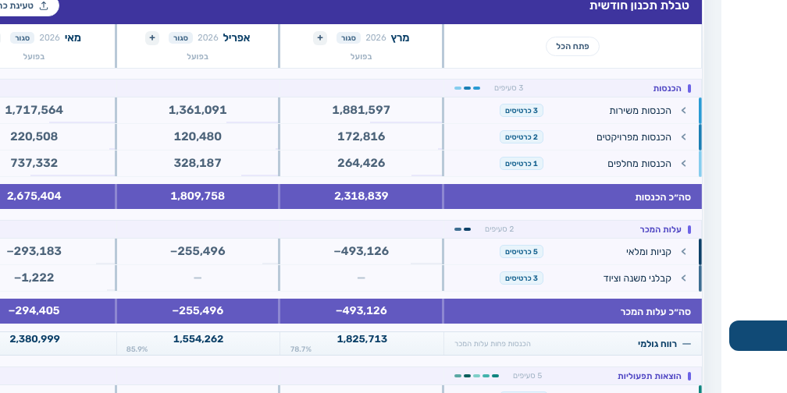
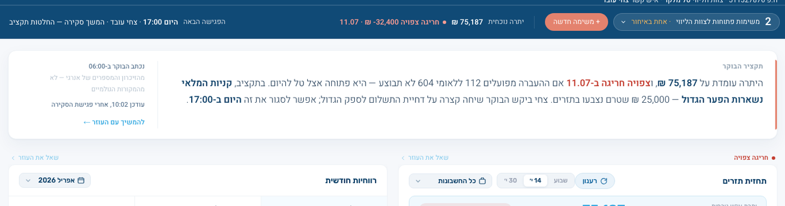

5הצד של הלקוחדשבורד, תקציר בוקר ועוזר בוואטסאפ — הכל בשם המשרד שלך
+ניהול המשרדיועצים והרשאות, חיוב, לידים, תבניות הודעות ובקרת איכות
זה השקף שנותן להם את המפה. "אני אעבור על חמשת החלקים לפי הסדר הזה, ואראה לך כל אחד במערכת עצמה." אם הם עוצרים בשאלה על חלק מסוים — לקפוץ לשקף שלו.
חלק 1 · תפעול חודשי
התפעול מבוצע על ידי HK, לא על ידך
לכל חברה, כל חודש: חמישה שלבי עבודה — קיטלוג תנועות, מוטבי שיקים, נגררות ולא־צפויות, הודעות מהלקוח והזנות עתידיות — ואחריהם חמש בדיקות שסוגרות את החודש.

מצב תפעול — שלבי העבודה, מספר המשימות בכל שלב, והחריגות שטרם דווחו
אפסשעות הקלדה שנשארות אצלך
300 ₪סבילות הבדיקה בין הדוח לתנועת הבנקים
פר חברהזמן התפעול נמדד — וידוע כמה כל לקוח עולה
להדגיש שזה שירות ולא פיצ׳ר — אדם שמפעיל מערכת. זה ההבדל מכל כלי תוכנה שהם מכירים. התזרים לא נשלח ללקוח עד שכל חריגה דווחה או הוכרעה. אם שואלים על הוואטסאפ: מנהל התזרים עונה ללקוח בשם המשרד, ואליהם מגיע רק מה שדורש יועץ.
חלק 2 · זיכרון לקוח
המערכת מתחזקת פרופיל חי לכל לקוח
שתים־עשרה קטגוריות שמתעדכנות אוטומטית מכל פגישה, שיחה והודעה — מעגל החברה מימין, המעגל האישי משמאל. לכל שורה תאריך ומקור, ולכל קטגוריה הגדרה מי רשאי לראות אותה.

לכל שורה תאריך ומקור · «מסונן ללקוח» מסמן מה שלא נחשף לבעל העסק
12קטגוריות — שש ברמת החברה ושש ברמת האדם
אוטומטימתעדכן מפגישות, שיחות, הקבוצה והעוזר
מוקדםירידה בשביעות רצון מזוהה לפני שהלקוח עוזב
להראות קטגוריה אחת פתוחה. ולומר בכנות: אחרי שנה של עבודה הזיכרון הוא נכס של המשרד שלהם ואין לו תחליף — ולכן הוא נשמר בטקסט קריא ולא בקופסה שחורה.
חלק 3 · תקשורת
ארבעה ערוצים, מסך אחד, אותם תוצרים
פגישהשיחת טלפוןקבוצת וואטסאפעוזר AI
ג׳וב לילי
סיכוםמה נאמר ומה נסגר
משימותמוצעות — לאישורך
זיכרוןמה שנכנס לכרטיס הלקוח

הרשימה עצמה — עמודת הערוץ, הסטטוס, ובורר הלקוח שמסנן את הכל
לסנן לקוח אחד ולהראות. הנקודה: השאלה של יועץ היא "מה קורה עם הלקוח הזה", ולכן זה מסך אחד ולא ארבעה. שיחה בלי שיוך לחברה לא מתומללת בכלל — היא ממתינה בתור.
חלק 3 · תקשורת — הפגישה
הכנה שנבנית מחדש בכל פתיחה
דף ההכנה לא נשמר ולא נכתב מראש — הוא נגזר ברגע הפתיחה מהזיכרון החי, מהמספרים העדכניים ומהמשימות הפתוחות.

ההנחיות האישיות ומה שנשלף מהזיכרון — כל שורה עם תג המקור שלה
שתי דקות במקום שעהנפתחת מוכנה מהיומן, או מהבר שעולה חמש דקות לפני הפגישה.
תמיד עדכניתמסמך שנכתב לפני שבוע כבר לא נכון. זה נכון לרגע שנפתח.
אחרי הפגישה — לאישור בלבדסיכום, משימות שחולצו ועדכוני זיכרון מוכנים; אתה מאשר ושולח.
להקריא את ההנחיה האישית מהמסך — היא באה מקטגוריית סגנון התקשורת בזיכרון. זה הרגע שבו יועצים מבינים שהמערכת מכירה את הלקוח ולא רק מתייקת אותו.
חלק 3 · תקשורת — משוב מקצועי
המערכת מנתחת גם את ניהול הפגישה שלך
אחרי כל פגישה נוצר משוב על עבודת היועץ בארבעה צירים: מיקוד וחיבור
ל«למה», הקשבה ומתן מרחב, עבודה ברובד הסמוי, והובלה והנעה לפעולה.
שיפור מדיד מפגישה לפגישהנקודות חוזק ולשיפור, מנוסחות על הפגישה הספציפית ולא בכלליות.
כלי הכשרה למשרדיועץ חדש נכנס לשיטה קיימת ומקבל משוב מהפגישה הראשונה.
פרטי לחלוטיןלא נשלח ללקוח, לא נראה למנהל המשרד.

החלק שאין לו מקבילה בשוק — לומר עניינית ולא כהתפארות: רוב הכלים מודדים את הלקוח; כאן יש גם משוב על עבודת היועץ. מי שזה לא מעניין אותו פשוט לא נכנס לטאב.
חלק 4 · דוחות פיננסיים
תכנון קדימה ודוח רווח והפסד — מוכנים
תכנון תזרימי לחודשים קדימה עם יעד לכל קטגוריה ויתרות שמתגלגלות; ודוח רווח והפסד שנבנה מהכרטסת האמיתית של רואה החשבון.

תכנון חשבונאי — 14,083 תנועות ← 631 כרטיסים. ה־AI ממפה מבנה ומסווג שמות; כל חיבור של סכומים רץ בקוד דטרמיניסטי עם בדיקות ביקורתתכנון תזרימי — יעד לכל קטגוריה, יתרות שמתגלגלות קדימה, וחריגה שנראית בתחזית לפני שהיא קורית
ההפרדה חשובה ליועצים: ה-AI מסווג וממפה בלבד; הכסף מחובר בקוד. זה מה שמאפשר להציג את הדוח ללקוח בלי לבדוק אותו שורה־שורה. יש גם מעקב תקציב ומדדים לא־פיננסיים.
חלק 5 · הצד של הלקוח
הלקוח מקבל מערכת בשם המשרד שלך
הדשבורד של בעל העסק נפתח בתקציר הבוקר — פסקה שנכתבת כל בוקר מהזיכרון ומיתרות הבנק העדכניות, ומקשרת מהנרטיב אל הראיות שמתחתיו.

שימורהלקוח מרגיש מטופל כל בוקר, לא רק ביום הפגישה
white-labelאין אזכור ל־HK — לא בכותרת, לא בשם הבוט, לא בתפקידים
פחות שאלותהעוזר בוואטסאפ עונה; מה שדורש יועץ מגיע אליך כמשימה
סיפור אמיתי מהמערכת: אחרי התראת חריגה הלקוח שאל את העוזר "מה זאת אומרת חריגה?" — וזה הפך למשימה ליועץ ולשורת זיכרון. מה שהלקוח שואל מגלה מה מטריד אותו.
ומעל הכל · ניהול המשרד
שכבת ניהול למשרד שגדל
מה שמאפשר להעביר את השיטה בין יועצים: הרשאות ותפקידים, מחזור חודשי אחיד, תבניות הודעות מאושרות, ובקרת איכות על התוצרים של ה־AI.
יועצים והרשאותמי רואה מה, ומי מורשה לאשר
חיוב וגבייהמי משלם כמה ומתי
לידיםצינור הגיוס של המשרד
הודעות אוטומטיות11 סוגים, פר איש קשר, בתבניות מאושרות
שיוך מספרי טלפוןמספר ← נציג ← חברה. זה מה שמחבר שיחה נכנסת ללקוח
קטגוריות ובסיס ידעמה שהתפעול מקטלג לפיו, ומה שה־AI יודע על התחום
בדיקות איכותבקרה על תוצרי ה־AI לפני שהם מגיעים ללקוח
משימות ובקשות ל־HKמה שביקשת ממנהל התזרים — עם מצב ותאריך יעד
עזרה בכל מסךהסבר מותאם למסך שאתה עומד בו, גם לבעל העסק
השיטה מוגדרת ברמת המשרד — מחזור חודשי, שלבים ויעדים — כך שיועץ חדש
נכנס לשיטה קיימת ולא ממציא אותה מחדש.
לעבור מהר — זה לא ליבת הפגישה. המסר: מוצר בוגר ולא דמו, והשיטה עוברת בין יועצים.
מה זה משנה בפועל
הזמן שיורד מהיועץ, פר לקוח לחודש
פעילות
היום
עם HK
תפעול תזרים — קיטלוג, התאמות, רדיפה אחרי חומר
4–8 שעות
0
הכנה לפגישה
כשעה
דקות
סיכום ומשימות אחרי פגישה
כחצי שעה
דקות
מענה שוטף בוואטסאפ
1–2 שעות
רק מה שדורש יועץ
סה״כ פר לקוח לחודש
7–10 שעות
1–1.5 שעות
80 שעות עבודת לקוחות בחודש מכסות היום 8–10 לקוחות. כשהתפעול יורד — אותן שעות מכסות 25–30.
כאן לעצור ולעשות את החשבון על המספרים שלהם: כמה לקוחות יש להם, כמה שעות הם מעריכים שהתפעול לוקח, וכמה שווה שעה שלהם. המספר צריך לצאת מהם, לא ממני.
איך מתחילים
לקוח אחד, חודש הרצה
1בוחרים לקוחעדיף כזה שהתפעול שלו כבד — שם ההבדל נראה כבר בחודש הראשון
2ישיבת פתיחה אחתחשבונות בנק, כרטסת אם יש, קטגוריות ואנשי הקשר שמקבלים הודעות
3HK מריצה לו חודשקיטלוג, בדיקות, תזרים מוכן — ואתה מגיע לפגישה ורואה מה השתנה
אין פרויקט הטמעה ואין חודש שבו עובדים כפול. אפשר להריץ במקביל לשיטה הקיימת, כמה זמן שתרצה.
הבקשה קונקרטית וקטנה: לקוח אחד. אם אפשר — לבחור אותו יחד עכשיו, בפגישה. זה מה שהופך את הסיום להתחלה של משהו ולא לשאלה פתוחה.